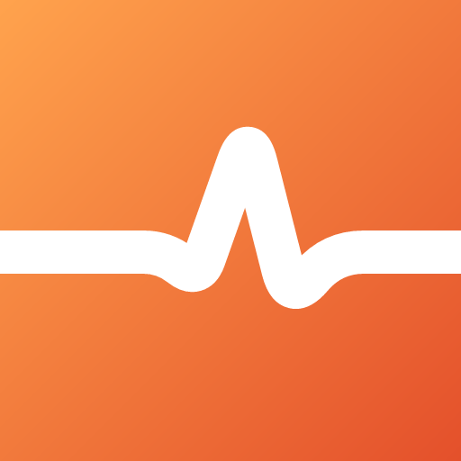
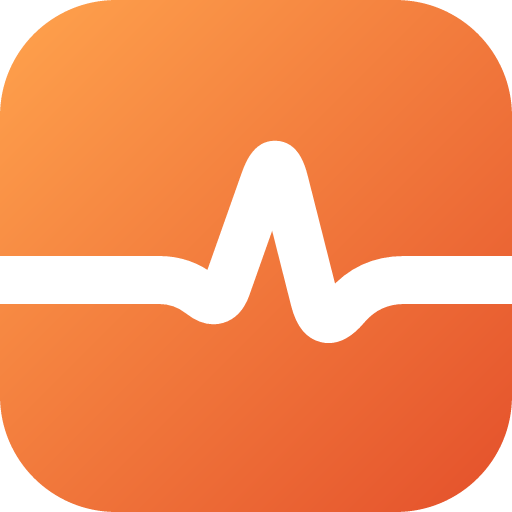
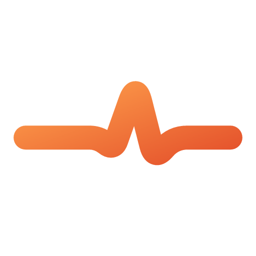
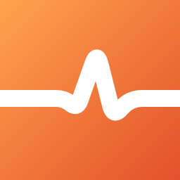
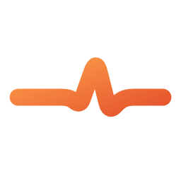
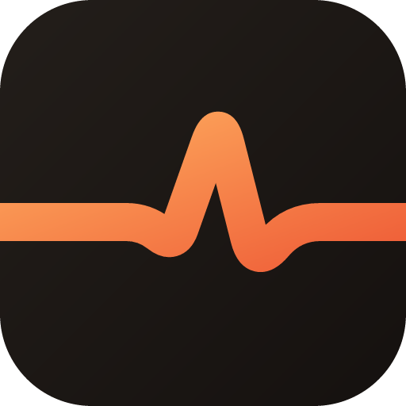
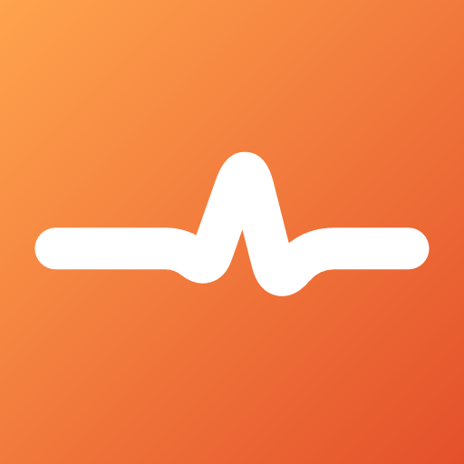

teknopulse.id · konsep pulse (EKG) — denyut berita teknologi ·
tile gradien #FFA34D → #E4502B (turunan palet situs #F47825 / #E25936)




16 & 32 px memakai sumber garis lebih tebal agar tetap tajam di tab browser.
TeknoPulse — Berita Teknologi…
Favicon = favicon.svg (fallback PNG 16/32).

TeknoPulse — mark + wordmark, pakaiteknopulse-mark.svg.
Tile rounded aman untuk crop lingkaran (avatar). Untuk Android/PWA gunakan
maskable 192/512.



1) Salin favicon.svg -> public/favicon.svg (timpa favicon bawaan, selesai) 2) Apple touch icon (opsional): teknopulse-icon-180.png -> public/apple-touch-icon.png <link rel="apple-touch-icon" href="/apple-touch-icon.png" /> 3) Mark di header (opsional): <img src="/teknopulse-mark.svg" alt="" width="28" height="28" />
Regenerasi PNG dari SVG: ./render-all.sh · detail lengkap di README.txt